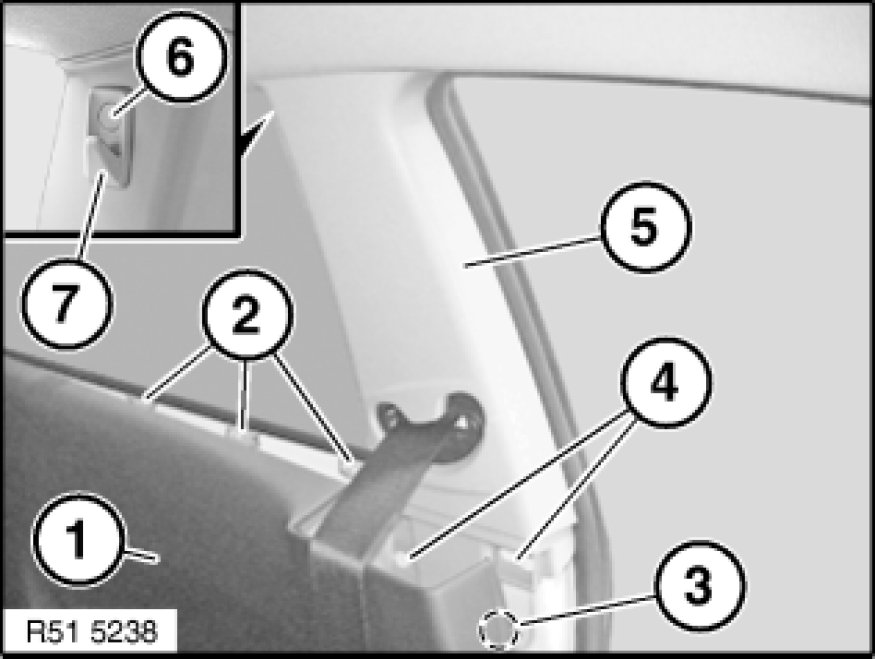
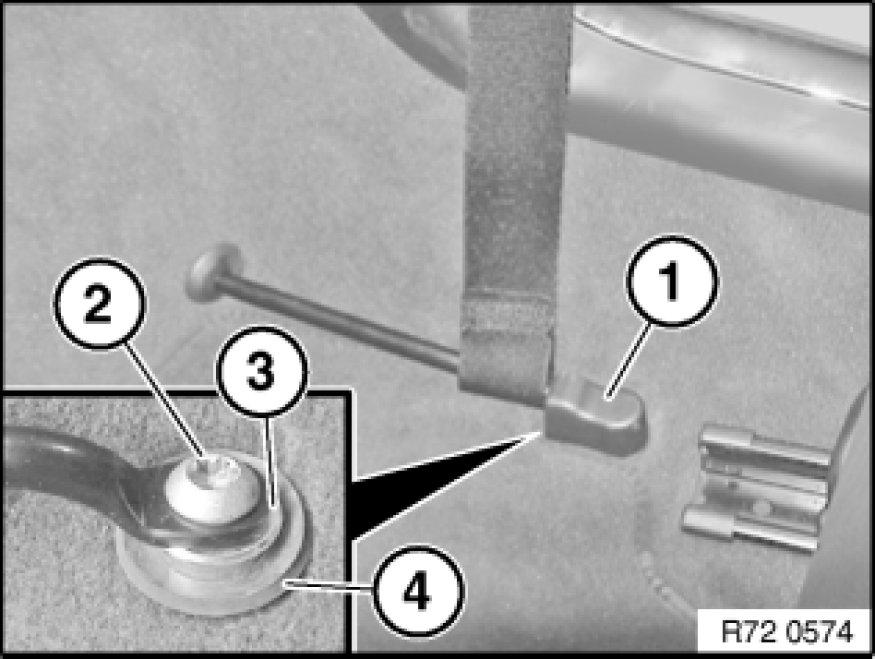
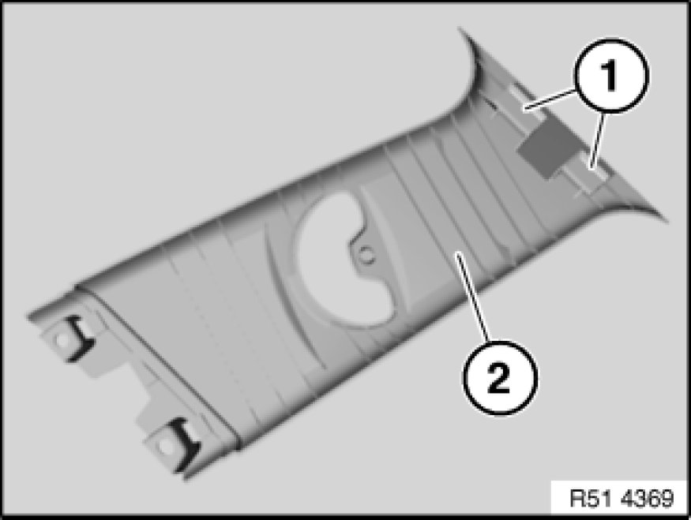

Removing and Installing or Replacing Panel For Left or Right Door Pillar
51 43 148 - Removing and installing or replacing panel for left or right door pillar

Lever out cap (6) and release screw underneath.
Remove coat hook (7).
Release side trim panel (1) at retainers (2) and clip (3).
Release trim panel (5) at clips (4) and remove in downward direction.
Installation:
If necessary, replace faulty clips (3 and 4).

Complete removal only:
Lever out cap (1).
Release screw (2) and detach seat belt strap.
Tightening torque 72 11 5AZ Specifications.
Feed out seat belt strap from trim for door pillar.
Installation:
Check that spacer bushing (3) and rubber ring (4) are in correct position.

Installation:
Guides (1) on trim (2) must not be damaged.